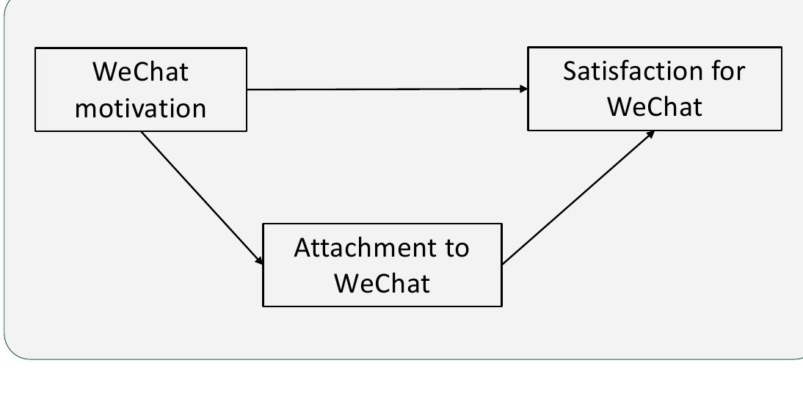
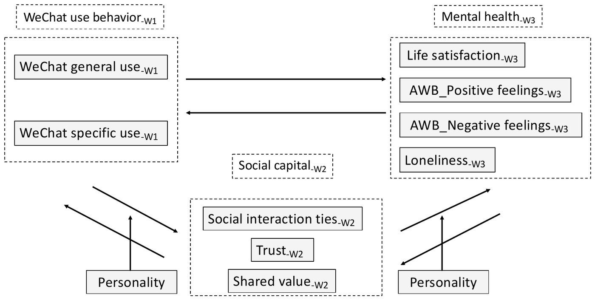

Research on social media and mental health is famously contradictory: some studies find it helps, others that it harms. One reason is measurement. Most studies count time spent, the same vanity metric many dashboards still rely on, and ignore why people use a platform and what they actually do there.
I focused on WeChat, China's "super app" with over 1.3 billion monthly users, and split use into motivations, general use and specific behaviours, tested against several well-being outcomes over time.
Study 1 · Why do people use WeChat?
- Which motivations drive WeChat use?
- Which motivations predict attachment to the app and satisfaction with it?
- Does attachment mediate the link between motivation and satisfaction?
Study 2 · What do they do, and how do they feel over time?
- Are general and specific WeChat behaviours associated with mental health, and does social capital explain the link?
- Which way do effects run over time: does use shape well-being, or well-being shape use?
- Do trust and shared values mediate these effects over time, and does personality change them?

